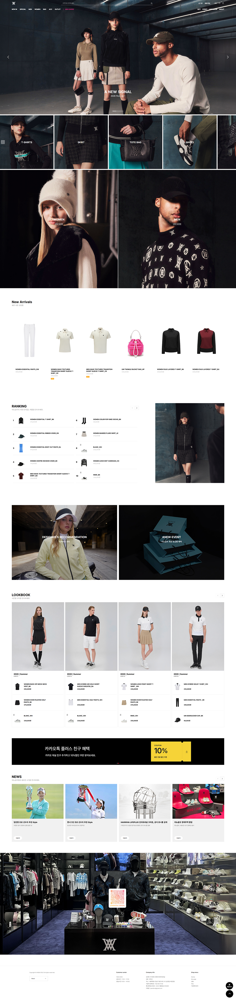
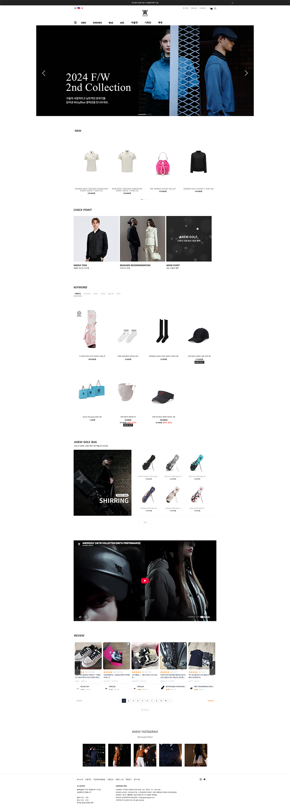
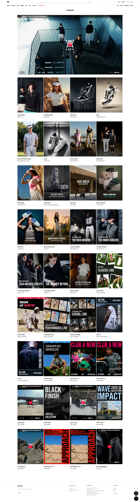
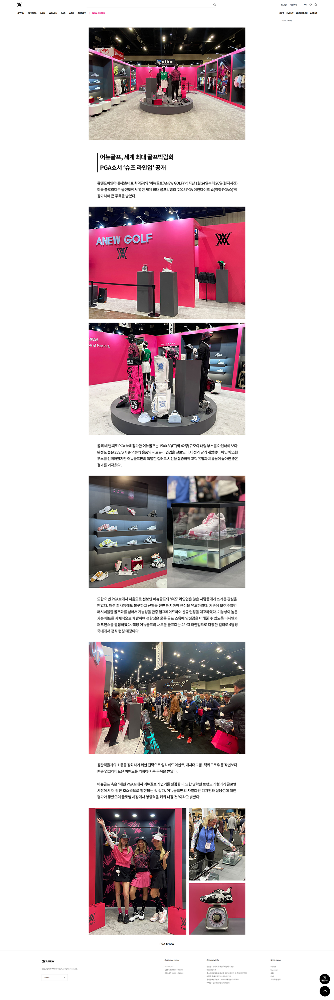

Rebuilding ANEW GOLF
for a sharper digital brand experience.
ANEW GOLF is an in-house golf fashion brand operated by our company. The project was a full e-commerce renewal: reorganizing the storefront around current brand direction, improving responsive product discovery, and translating the redesign into a live Cafe24 environment.
Redesigned an existing owned-brand golf commerce site — modernized the visual hierarchy, rebuilt responsive shopping flows, and implemented the renewed experience in a live Cafe24 store.

An owned brand had outgrown its existing storefront.
This case study documents a real production redesign. It is grounded in the existing live store, product/content requirements, responsive implementation constraints, and day-to-day commerce operations. Where formal user-research data was not available, I distinguish design rationale from validated impact.
The previous ANEW GOLF storefront supported commerce, but its hierarchy was heavily section-based: a large promotional hero followed by New, Check Point, Keyword, bag merchandising, editorial content, reviews, and social content. As the brand and product range expanded, the digital experience needed a clearer hierarchy and a stronger connection between brand storytelling and shopping.
The renewal focused on making the site feel more current, easier to navigate across device sizes, and more scalable for seasonal products, campaigns, lookbooks, and ongoing e-commerce operations.
The redesign started by simplifying what competed for attention.
The goal was not to remove commerce content, but to give each layer a clearer job: brand first, product discovery second, supporting editorial and campaign content after.

Section-heavy storefront with multiple merchandising and content modules competing within one long homepage.
Renewed hierarchy designed around current brand presentation, clearer navigation, and responsive product discovery.
Visual hierarchy
The old homepage contained many modules with similar visual weight, making the primary shopping story less distinct.
Responsive behaviour
The renewal needed to support desktop and mobile as intentionally designed experiences rather than simple content shrinkage.
Content scalability
Seasonal campaigns, new products, lookbooks, rankings, and brand stories needed a system that could be updated continuously.
PDP clarity
The product-detail experience needed clearer product information, stronger media hierarchy, and a more deliberate path toward purchase.
Make the brand feel editorial without making shopping harder.
ANEW GOLF needed to communicate a distinctive fashion identity while still working as a high-volume commerce environment. I used clearer hierarchy, larger visual moments, structured product modules, and responsive navigation to balance brand and utility.
From stacked modules to a clearer content rhythm.
The homepage was reorganized so promotional imagery, new products, ranking, lookbook, and news each have a clearer role. This creates stronger visual pacing while keeping frequently updated commerce content maintainable.

Desktop preserves the breadth of the brand and catalogue; mobile reduces simultaneous choices and prioritizes navigation, product scanning, and touch-friendly entry points.
A product architecture that can grow with the collection.
The renewed store supports broad categories such as Men, Women, Bag, Accessories, Outlet, and seasonal/special collections while keeping product cards readable across breakpoints.

Desktop PLP
Comparison-friendly grid and category navigation.

Mobile PLP
Reduced density and more focused product scanning.
Reduce dead space and make product information easier to act on.
The legacy product page devoted substantial vertical space to static product imagery and specification content. The renewal is documented here as a comparison of hierarchy, media, purchase information, and supporting product details.

Long static detail content with large unused vertical areas between product imagery, size information, and policy content.

Renewed hierarchy showing product media, purchase information, options, and supporting details as a clearer decision path.
Product storytelling still matters for a fashion brand, but it should support the purchase decision. The redesign separates primary decision information from deeper editorial and specification content.
Build a reusable system for campaigns, lookbooks, and news.
The site needed more than product templates. Seasonal launch content, lookbooks, event pages, time-sensitive promotions, and news were designed as repeatable content patterns that could support ongoing brand operations.

Lookbook
Editorial brand storytelling tied to seasonal collections.

Campaign / Event
Reusable structure for time-sensitive commerce.

News
A consistent publishing surface for ongoing brand updates.
The work continued past the Figma frame.
A key part of the project was translating the redesigned experience into a maintainable live store.
Responsive front-end
Implemented desktop and mobile layouts with breakpoint-specific hierarchy and interaction behaviour.
Cafe24 customization
Worked within a production e-commerce CMS/theme environment rather than a static prototype.
Operational QA
Reviewed live modules, product states, responsive reflow, content updates, and production issues after implementation.
Maintainability
Structured recurring brand and campaign content so the online team could continue operating the store after launch.
A renewed commerce system for an evolving golf-fashion brand.
The result was a more current responsive storefront and a content system designed for real, ongoing brand operations.
Rebalanced promotional imagery, product modules, and editorial content so each layer has a more distinct role.
Designed desktop and mobile around different browsing contexts instead of treating mobile as a scaled copy.
Created reusable patterns for collections, rankings, lookbooks, events, and news.
Connected UI/UX decisions to front-end implementation and operational QA in Cafe24.
ANEW GOLF shows my ability to work on an owned brand over time — not only redesigning an interface, but understanding the operational system behind a live commerce experience.